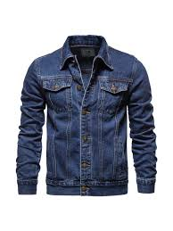
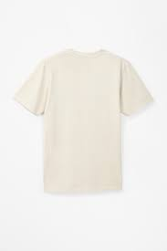

Welcome to NEGEN
NEGEN is revolutionizing the fashion industry by combining sustainability, personalization, and blockchain technology. Our marketplace offers unique, eco-friendly clothing options that are tailored to your individual style and needs.
By leveraging blockchain technology, we ensure transparency in our supply chain, allowing you to trace the journey of your garments from raw materials to your closet. This innovative approach not only guarantees the authenticity and quality of our products but also promotes fair labor practices and reduces our environmental impact.
Experience fashion that's good for you and the planet. Discover NEGEN today!
Featured Products
Eco-Friendly Denim Jacket
Our sustainable denim jacket is made from recycled materials and organic cotton. Each jacket is uniquely personalized using blockchain-verified eco-friendly dyes.
Price: $89.99
Customizable Organic Cotton T-Shirt
Create your own design on our 100% organic cotton t-shirts. Our blockchain-enabled platform allows you to track the entire production process of your personalized shirt.
Price: $34.99
Suggest a Product or Idea
We value your input! Please share your ideas for sustainable fashion products or any suggestions to improve our marketplace.